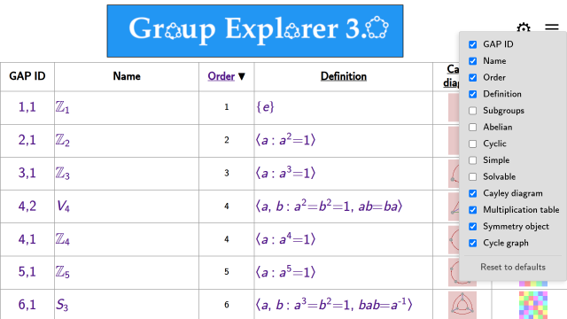
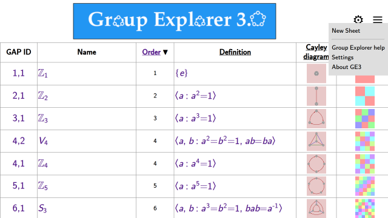
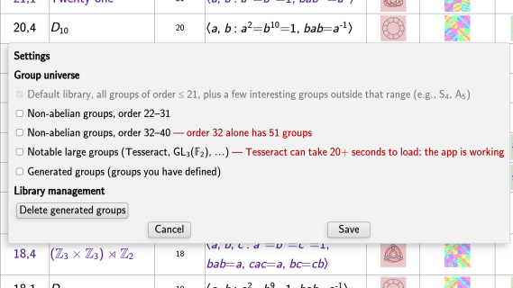

This page documents the main window of the Group Explorer web application, from which all other pages are opened.
The group table

Each row in the table represents a group in the library. By default the following columns are shown:
- GAP ID — the group’s ID in the GAP computer algebra system
- Name — the symbolic name of the group
- Order — the number of elements in the group
- Definition — a presentation of the group by generators and relations
- Cayley diagram
- Multiplication table
- Object of symmetry
- Cycle graph
Clicking any thumbnail opens the corresponding visualizer. Clicking a group’s name or GAP ID opens its Group Info page, which is the main launchpad for exploring the group.
On touch devices, tap a row once to highlight it and see a description; tap again to open the page.
The first time you visit the Group Explorer main page it may take a moment to load all the groups in the library. Future visits are faster because the application stores the library in your browser.
Configuring the columns

Click the ⚙ icon in the upper right of the page heading to open the column configuration panel. In addition to the default columns above, the following computed columns are available:
- Subgroups — total number of subgroups
- Abelian — whether the group is abelian
- Cyclic — whether the group is cyclic
- Simple — whether the group is simple
- Solvable — whether the group is solvable
Your column choices and sort order are saved automatically and restored the next time you open Group Explorer. Use Reset to defaults at the bottom of the panel to restore the original column set.
Sorting the table
Click any column heading to sort by that column; click again to reverse the sort order. Note that some column headings are also links to help pages — clicking the link text navigates to help rather than sorting; click elsewhere in the heading cell to sort.
Page heading

The page heading contains two icons on the right:
- ⚙ — opens the column configuration panel (described above)
- ≡ — opens the page menu
The page menu contains:
New Sheet
Opens a blank sheet for building diagrams that connect multiple groups with morphisms. See the sheets tutorial or the sheets reference.
Group Explorer help
Opens this help system.
Settings
Opens the Settings dialog, where you can control which groups appear in the library:

- Non-abelian groups, order 22–31 — an extended collection of larger groups
- Non-abelian groups, order 32–40 — a further extension (order 32 alone contains 51 groups)
- Notable large groups — selected larger groups of special mathematical interest. Be aware that the Tesseract group is computationally demanding: its row takes about 5 seconds to appear in the Group Library, its Group Info page takes around 15 seconds to render, and expanding the Subgroups section can take 20 seconds or more as all its generated subgroups are computed. The app is working during this time — it has not crashed. The wait is rewarded: the Tesseract’s Cayley diagram is one of the most complex and beautiful structures in the library.
- Generated groups — groups you have defined yourself
Groups take up very little space — the entire default library is smaller than a typical photograph — so there is no need to manage storage. The Delete generated groups button is there if you want a clean slate; any deleted group can always be recreated.
About GE3
Displays version information and links to the project website and source repository.